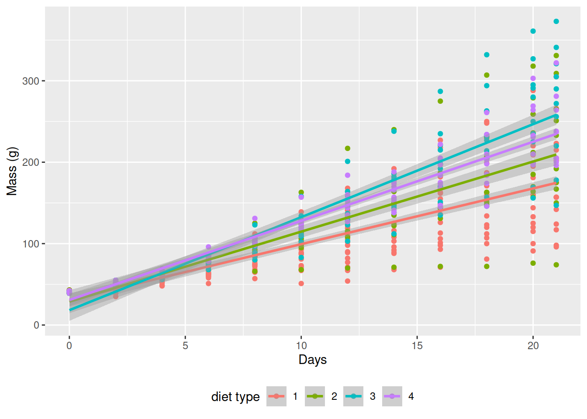

Chapter 5 Graphics with ggplot2
“The greatest value of a picture is when it forces us to notice what we never expected to see.”
— John Tukey
“If I can’t picture it, I can’t understand it.”
— Albert Einstein
Though it may have started as statistical software, R has moved far beyond it’s mundane origins. The language is now capable of a wide range of applications, some of which you have already seen, and some others you will see over the rest of this course. For the first half of Day 2 we are going to jump straight into data visualisation.
5.1 Example figures
Just to whet the appetite, below is provided a small selection of the figures that R and ggplot2 are capable of producing. These are things that AJ and/or myself have produced for publication or in some cases just for personal interest. Remember, just because we are learning this for work, doesn’t mean we can’t use it for fun, too. The idea of using R for fun may seem bizarre, but perhaps by the end of Day 5 we will have been able to convince you otherwise!

Figure 5.1: The effect of variance (SD) within a temperature time series on the accurate modelling of decadal trends.

Figure 5.2: The (currently) three most infamous marine heatwaves (MHWs) around the world.

Figure 5.3: Changes in seaweed biodiversity along the South African coastline.

Figure 5.4: Polar plots of monthly temperatures.

Figure 5.5: Most appropriate autoregressive correlation coefficients for areas around western boundary current.

Figure 5.6: The bathymetry of South Africa with SSTs from the MUR product.

Figure 5.7: The power of the detected decadal trend at each coastal temperature collection site given a hypothetical number of months.

Figure 5.8: An inset map of False Bay.

Figure 5.9: The strength of the relationship between each site based on their biodiversity.

Figure 5.10: A hierarchical cluster analysis.

Figure 5.11: Current velcoties of Western Boundary Currents.
5.2 Basics of ggplot2
R comes with basic graphing capability, known colloquially (by nerds) as ‘Base R.’ The syntax used for this method of creating graphics is often difficult to interpret as there are few human words in the code. In addition to this issue, Base R also does not allow the user enough control over the look of the final product to satisfy the demands of many publishers. Meaning the figures tend not to look professional enough (but still much better than Excel). To solve both of these problems, and others, the ggplot2 package was born.
As part of the tidyverse (as we saw briefly on Day 1, and will go into in depth on Day 4), the ggplot2 package endeavours to use a clean, easy for humans to understand syntax that relies heavily on functions that do what they say. For example, the function geom_point() makes points on a figure. Need a line plot? geom_line() is the way to go! Need both at the same time? No problem. In ggplot2 we may seamlessly merge a nearly limitless number of objects together to create startlingly sophisticated figures. Before we go over the code below, it is very important to note the use of the + signs. When we use ggplot2 code we add different lines of code to one another. Each line of code represents one new geometric or aesthetic value of the figure. It is designed this way so as to make it easier for the human eye to read through the code.
One may see below that the code naturally indents itself if the previous line ended with a + sign. This is because R knows that the top line is the parent line and the indented lines are it’s children. This is a concept that will come up again when we learn about tidying data. What we need to know now is that a block of code that has + signs, like the one below, must be run together. As long as lines of code end in +, R will assume that you want to keep adding lines of code. If we are not mindful of what we are doing we may tell R to do something it cannot and we will see in the console that R keeps expecting more + signs. If this happens, click inside the console window and push the esc button to cancel the chain of code you are trying to enter.
# Load libraries
library(tidyverse)
# Load data
ChickWeight <- datasets::ChickWeight
# Create a basic figure
ggplot(data = ChickWeight, aes(x = Time, y = weight)) +
geom_point() +
geom_line(aes(group = Chick))So what is that code doing? We may see from the figure that it is creating a little black dot for every data point, with the Time of sampling on the x axis, and the weight of the chicken during that time on the y axis. It then connects the dots for each chicken in the dataset. Let’s break this code down line for line to get a better idea of what it is doing. The first line of code is telling R that we want to create a ggplot figure. We know this because we are using the ggplot() function. Inside of that function we are telling R which dataframe (or tibble) we want to create a figure from. Lastly, with the aes() argument, which is short for ‘aesthetic,’ we tell R what the necessary parts of the figure will be. This is also known as ‘mapping.’ The second line of code then takes all of that information and makes points (dots) out of it, added as a layer on the set of axes created by the aes() argument provided within ggplot(...) — in other words, we add a ‘geometry’ layer, and hence the name of the kind of ‘shape’ we want to plot the data as is prefixed by geom_. The third line takes the same information and creates lines from it — it adds yet another layer on top of the pre-existing one. Notice in the third line that we have provided another mapping argument by telling R to group the data by Chick. This is how R knows to draw an individual line for each chicken, and not just one big messy jagged line. Try running this code without the group argument for geom_line() and see what happens.
This figure doesn’t look like much yet. We saw some examples above that show how sophisticated figures may become. This is a remarkably straight forward task. But don’t take my word for it, let’s see for ourselves. By adding one more aesthetic to the code above we will now show each Diet as a different colour.
ggplot(data = ChickWeight, aes(x = Time, y = weight, colour = Diet)) +
geom_point() +
geom_line(aes(group = Chick))Do any patterns appear to emerge from the data? Perhaps there is a better way to visualise them? With linear models for example.
ggplot(data = ChickWeight, aes(x = Time, y = weight, colour = Diet)) +
geom_point() +
geom_smooth(method = "lm")How is a linear model calculated? What patterns do we see in the data now? If you were a chicken, which feed would you want?
5.3 To aes() or not to aes(), that is the question
The astute eye will have noticed by now that most arguments we have added to the code have been inside of the aes() function. So what exactly is that aes() function doing sitting inside of the other functions? The reason for the aes() function is that it controls the look of the other functions dynamically based on the variables you provide it. If we want to change the look of the plot by some static value we would do this by passing the argument for that variable to the geom of our choosing outside of the aes() function. Let’s see what this looks like by changing the colour of the dots.
ggplot(data = ChickWeight, aes(x = Time, y = weight)) +
geom_point(colour = "blue") +
geom_line(aes(group = Chick, colour = "blue"))Why are the points blue, but the lines are salmon with a legend that says they are ‘blue?’ We may see that in the line responsible for the points (geom_point()) we did not put the colour argument inside of the aes() function, but for the lines (geom_line()) we did. If we know that we want some aspect of our figure to be a static value we set this value outside of the aes() function. If we want some aspect of our figure to reflect some part of the data in our dataframe, we must set that inside of aes(). Let’s see an example where we set the size of the dots to equal the weight of the chicken and the thickness of the linear model lines to one static value.
ggplot(data = ChickWeight, aes(x = Time, y = weight, colour = Diet)) +
geom_point(aes(size = weight)) +
geom_smooth(method = "lm", size = 1.2)Notice that we have set the size of the points and the lines, but one is within aes() and the other not. Because the size of our points equals the weight of the chickens, the points become larger the heavier (juicier) the chickens become. But because we set the size of the lines to one static value, all of the lines are the same size and don’t change because of any other variables.
5.4 Changing labels
When we use ggplot2 we have control over every minute aspect of our figures if we so wish. What we want to do next is put the legend on the bottom of our figure with a horizontal orientation and change the axis labels so that they show the units of measurement. To change the labels we will need the labs() function. To change the position of the legend we need the theme() function as it is within this function that all of the little tweaks are performed. This is best placed at the end of your block of ggplot2 code.
ggplot(data = ChickWeight, aes(x = Time, y = weight, colour = Diet)) +
geom_point() +
geom_smooth(method = "lm") +
labs(x = "Days", y = "Mass (g)", colour = "diet type") + # Change the labels
theme(legend.position = "bottom") # Change the legend position
Notice that when we place the legend at the bottom of the figure ggplot automatically makes it horizontal for us. Why do we use ‘colour’ inside of labs() to change the legend title?
5.5 Exercise
With all of this information in hand, please take another five minutes to either improve one of the plots generated or create a beautiful graph of your own. Here are some ideas:
- See if you can change the thickness of the points/lines.
- Change the shape, colour, fill and size of each of the points.
- Can you find a way to change the name of the legend? What about its labels?
- Explore the different geom functions available. These include geom_boxplot, geom_density, etc.
- Try using a different color palette
- Use different themes
5.6 Session info
installed.packages()[names(sessionInfo()$otherPkgs), "Version"]R> forcats stringr dplyr purrr readr tidyr tibble ggplot2
R> "0.5.1" "1.4.0" "1.0.5" "0.3.4" "1.4.0" "1.1.3" "3.1.0" "3.3.3"
R> tidyverse
R> "1.3.0"